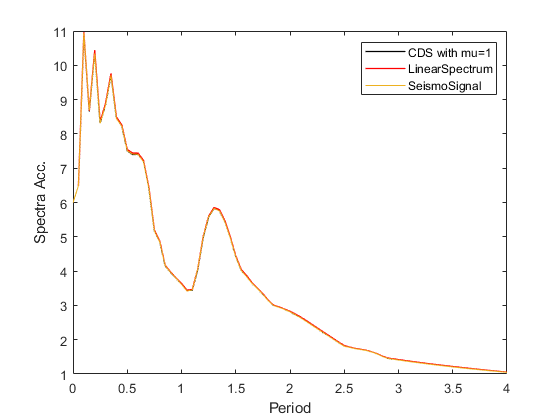

example Comparison of elastic and constant ductility response spectra for mu=1
Compare the linear elastic acceleration response spectrum and the constant ductility response spectrum for mu=1 (degenerates to linear elastic). Also, compare with corresponding results of SeismoSignal software
Contents
Input
Earthquake motion
eqmotions={'Imperial Valley'}; % Imperial valley 1979
data=load([eqmotions{1},'.dat']);
t=data(:,1);
dt=t(2)-t(1);
xgtt=data(:,2);
Set the eigenperiod range for which the response spectra will be calculated.
Tspectra=(0.05:0.05:4)';
Set critical damping ratio of the response spectra to be calculated.
ksi=0.05;
First we use the CDS to calculate linear response
Set the target ductility
mu=1; % mu=1 equivalent to a linear SDoF
Extract constant ductility response spectra
sw='cdrs';
Calculation CDRS{i}=[S.Period,S.CDSd,S.CDSv,S.CDPSa,S.fyK,S.muK,S.iterK];
S1=OpenSeismoMatlab(dt,xgtt,sw,Tspectra,ksi,mu);
Next we use ES to calculate linear response
Extract linear elastic response spectra
sw='elrs';
Initialize LERS
LERS=cell(numel(eqmotions),1);
Calculation LERS{i}=[S.Period,S.Sd,S.PSv,S.PSa];
S2=OpenSeismoMatlab(dt,xgtt,sw,Tspectra,ksi);
Results from SeismoSignal
fileID = fopen('SeismoSignal_Imperial Valley.txt'); for idx = 1:5 fgetl(fileID); end C = textscan(fileID,repmat('%f',1,12)); fclose(fileID);
Output
Plot spectral acceleration response spectra
plot(S1.Period,S1.CDSa,'k','LineWidth',1); hold on plot(S2.Period,S2.Sa,'r','LineWidth',1); plot(C{1},C{2}) legend('CDS with mu=1','LinearSpectrum','SeismoSignal'); xlabel('Period'); ylabel('Spectra Acc.')
Copyright
Copyright (c) 2018-2023 by George Papazafeiropoulos
- Major, Infrastructure Engineer, Hellenic Air Force
- Civil Engineer, M.Sc., Ph.D.
- Email: gpapazafeiropoulos@yahoo.gr